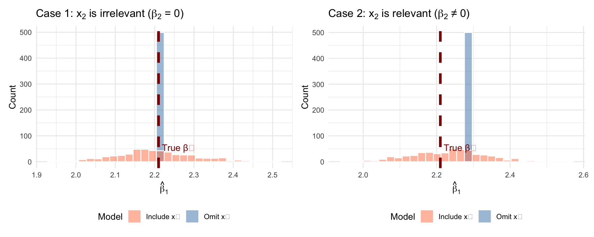

# Load data
data(mtcars)
# Bivariate regression
lm_bivariate <- lm(mpg ~ hp, data = mtcars)
# Multivariate regression (adding weight as control)
lm_multivariate <- lm(mpg ~ hp + wt, data = mtcars)5 Multivariate Regression
Key Questions
- Why do we need multivariate regression?
- How do we interpret coefficients when there are multiple independent variables?
- What is the zero conditional mean assumption in the multivariate case?
- How does multivariate OLS function as a “matching” estimator?
- What is the omitted variable bias formula and how do we use it?
- What is the bias-variance tradeoff when deciding which controls to include?
Suggested Readings
- Wooldridge (2019), Ch. 3
In Chapter 4, we introduced bivariate OLS and saw that causal interpretation requires the zero conditional mean assumption: \(E[\mu | x] = 0\). We also saw that this assumption is frequently violated due to omitted variables—factors in the error term that are correlated with both \(x\) and \(y\).
This chapter introduces multivariate OLS, which allows us to explicitly control for confounding variables. By including additional variables on the right-hand side of our regression, we can make the zero conditional mean assumption more plausible and get closer to causal estimates.
5.1 The Problem with Bivariate OLS
Let’s revisit why bivariate OLS often fails to give us causal estimates.
Consider a regression of wages on education:
\[ wage = \beta_0 + \beta_1 \cdot educ + \mu \]
For \(\hat{\beta}_1\) to be an unbiased estimate of the causal effect of education, we need \(E[\mu | educ] = 0\). But the error term \(\mu\) contains everything else that affects wages: ability, family connections, motivation, and countless other factors.
Many of these factors are likely correlated with education. For example, people from wealthier families tend to get more education (better schools, tutors, college is affordable) and earn higher wages (family connections, inherited wealth). If family income is in \(\mu\) and correlated with education, then \(E[\mu | educ] \neq 0\), and our estimate is biased.
The Core Problem
With bivariate OLS, the zero conditional mean assumption requires that all factors affecting \(y\) (other than \(x\)) be uncorrelated with \(x\). This is almost never plausible in observational data.
5.2 The Multivariate Solution
Multivariate OLS offers a solution: explicitly control for variables that might be confounders.
If we’re worried that family income confounds the education-wage relationship, we can include it in our model:
\[ wage = \beta_0 + \beta_1 \cdot educ + \beta_2 \cdot family\_income + \mu \]
Now \(\beta_1\) represents the effect of education on wages holding family income constant. The error term \(\mu\) no longer contains family income, so that source of bias is eliminated.
5.2.1 The General Multivariate Model
The general multivariate linear regression model with \(k\) independent variables is:
\[ y = \beta_0 + \beta_1 x_1 + \beta_2 x_2 + \cdots + \beta_k x_k + \mu \tag{5.1}\]
where:
- \(y\) is the dependent variable
- \(x_1, x_2, \ldots, x_k\) are the independent variables
- \(\beta_0\) is the intercept
- \(\beta_j\) is the coefficient on \(x_j\) (for \(j = 1, 2, \ldots, k\))
- \(\mu\) is the error term containing all factors not included in the model
5.2.2 Interpreting Coefficients
In multivariate regression, each coefficient has a ceteris paribus interpretation:
\[ \beta_j = \frac{\partial y}{\partial x_j} \]
This is the change in \(y\) associated with a one-unit increase in \(x_j\), holding all other independent variables constant.
For example, in the model:
\[ wage = \beta_0 + \beta_1 \cdot educ + \beta_2 \cdot family\_income + \mu \]
- \(\beta_1\): The change in wages for one additional year of education, holding family income constant
- \(\beta_2\): The change in wages for one additional dollar of family income, holding education constant
5.2.3 The Zero Conditional Mean Assumption
In multivariate OLS, the zero conditional mean assumption becomes:
\[ E[\mu | x_1, x_2, \ldots, x_k] = 0 \]
This states that the average of unobserved factors is zero for all unique combinations of the independent variables. In other words, everything in \(\mu\) must be uncorrelated with all the variables we’ve included.
This assumption is much more plausible than its bivariate counterpart. By including relevant control variables, we’ve removed them from \(\mu\), making it more likely that what remains is uncorrelated with our variables of interest.
5.3 Deriving the Multivariate OLS Estimator
The derivation follows the same logic as bivariate OLS: we minimize the sum of squared residuals.
5.3.1 The Minimization Problem
Given a sample of \(n\) observations, we want to find values \(\hat{\beta}_0, \hat{\beta}_1, \ldots, \hat{\beta}_k\) that minimize:
\[ SSR = \sum_{i=1}^{n} (y_i - \hat{\beta}_0 - \hat{\beta}_1 x_{1i} - \hat{\beta}_2 x_{2i} - \cdots - \hat{\beta}_k x_{ki})^2 \]
5.3.2 First-Order Conditions
Taking partial derivatives with respect to each \(\hat{\beta}_j\) and setting them equal to zero yields \(k + 1\) first-order conditions:
\[ \sum_{i=1}^{n}(y_i - \hat{\beta}_0 - \hat{\beta}_1 x_{1i} - \cdots - \hat{\beta}_k x_{ki}) = 0 \]
\[ \sum_{i=1}^{n} x_{1i}(y_i - \hat{\beta}_0 - \hat{\beta}_1 x_{1i} - \cdots - \hat{\beta}_k x_{ki}) = 0 \]
\[ \vdots \]
\[ \sum_{i=1}^{n} x_{ki}(y_i - \hat{\beta}_0 - \hat{\beta}_1 x_{1i} - \cdots - \hat{\beta}_k x_{ki}) = 0 \]
Solving this system of equations yields the OLS estimates. The algebra is tedious (and typically handled with matrix methods), so we won’t derive the explicit formulas here. Fortunately, your computer does this effortlessly.
5.4 Estimating Multivariate OLS in R
In R, we estimate multivariate regression using the same lm() function, simply adding variables with the + symbol.
5.4.1 Example: MPG, Horsepower, and Weight
Let’s estimate the effect of horsepower on fuel efficiency, first without and then with a control for vehicle weight.
Bivariate results:
summary(lm_bivariate)
Call:
lm(formula = mpg ~ hp, data = mtcars)
Residuals:
Min 1Q Median 3Q Max
-5.7121 -2.1122 -0.8854 1.5819 8.2360
Coefficients:
Estimate Std. Error t value Pr(>|t|)
(Intercept) 30.09886 1.63392 18.421 < 2e-16 ***
hp -0.06823 0.01012 -6.742 1.79e-07 ***
---
Signif. codes: 0 '***' 0.001 '**' 0.01 '*' 0.05 '.' 0.1 ' ' 1
Residual standard error: 3.863 on 30 degrees of freedom
Multiple R-squared: 0.6024, Adjusted R-squared: 0.5892
F-statistic: 45.46 on 1 and 30 DF, p-value: 1.788e-07Multivariate results:
summary(lm_multivariate)
Call:
lm(formula = mpg ~ hp + wt, data = mtcars)
Residuals:
Min 1Q Median 3Q Max
-3.941 -1.600 -0.182 1.050 5.854
Coefficients:
Estimate Std. Error t value Pr(>|t|)
(Intercept) 37.22727 1.59879 23.285 < 2e-16 ***
hp -0.03177 0.00903 -3.519 0.00145 **
wt -3.87783 0.63273 -6.129 1.12e-06 ***
---
Signif. codes: 0 '***' 0.001 '**' 0.01 '*' 0.05 '.' 0.1 ' ' 1
Residual standard error: 2.593 on 29 degrees of freedom
Multiple R-squared: 0.8268, Adjusted R-squared: 0.8148
F-statistic: 69.21 on 2 and 29 DF, p-value: 9.109e-125.4.2 Interpreting the Results
In the bivariate regression, the coefficient on horsepower is \(-0.068\): each additional unit of horsepower is associated with 0.068 fewer miles per gallon.
In the multivariate regression (controlling for weight), the coefficient on horsepower drops to \(-0.032\)—less than half the size!
What happened? Horsepower and weight are positively correlated (more powerful engines tend to be in heavier vehicles), and weight independently reduces fuel efficiency. The bivariate estimate was conflating the effect of horsepower with the effect of weight. Once we control for weight, we isolate the effect of horsepower alone.
What Changed?
The coefficient on hp dropped from \(-0.068\) to \(-0.032\) when we added wt. This suggests that much of what appeared to be the “effect” of horsepower was actually the effect of weight. This is precisely what controlling for confounders accomplishes.
5.5 Multivariate OLS as Matching
There’s an intuitive way to understand what multivariate OLS does: it’s essentially a matching estimator. When we “control for” a variable, we’re comparing observations that have similar values of that control variable.
5.5.1 The Returns to Education Example
Suppose we want to estimate the effect of education on wages. A simple comparison of average wages across education levels might be misleading because people with more education tend to work in higher-paying industries. Part of the apparent “return to education” might actually be an “industry premium.”
Let’s work through this with simulated data to see exactly how controlling for industry works.
# Simulate wage data
set.seed(42)
n <- 2000
# Create data where:
# - More educated workers are more likely to be in high-paying industries
# - Industry independently affects wages
wage_data <- tibble(
# Education: 1 = HS, 2 = Some College, 3 = Bachelor's+
educ_years = sample(c(12, 14, 16), n, replace = TRUE, prob = c(0.4, 0.3, 0.3)),
# Higher education -> more likely in professional services (high pay industry)
ind_professional = rbinom(n, 1, prob = case_when(
educ_years == 12 ~ 0.20,
educ_years == 14 ~ 0.40,
educ_years == 16 ~ 0.65
)),
# Wages depend on education AND industry
wage = 25000 +
3000 * (educ_years - 12) + # True education effect: $3000 per year
15000 * ind_professional + # Industry premium: $15000
rnorm(n, 0, 8000)
) |>
mutate(
educ_cat = case_when(
educ_years == 12 ~ "HS Only",
educ_years == 14 ~ "Some College",
educ_years == 16 ~ "Bachelor's+"
),
industry = ifelse(ind_professional == 1, "Professional", "Other")
)5.5.2 The Naive Comparison
First, let’s compute average wages by education level without any controls:
naive_means <- wage_data |>
group_by(educ_cat, educ_years) |>
summarise(avg_wage = mean(wage), n = n(), .groups = "drop") |>
arrange(educ_years)
naive_means |>
knitr::kable(
col.names = c("Education", "Years", "Avg Wage ($)", "N"),
digits = 0
)| Education | Years | Avg Wage ($) | N |
|---|---|---|---|
| HS Only | 12 | 28575 | 829 |
| Some College | 14 | 36961 | 604 |
| Bachelor’s+ | 16 | 46341 | 567 |
The naive comparison suggests that going from high school to some college is associated with about $8,386 higher wages, and going from high school to a bachelor’s degree is associated with about $17,766 higher wages.
But wait—the true effect of education in our simulation is only $3,000 per year (so $6,000 for 2 extra years and $12,000 for 4 extra years). The naive estimates are too large! This is because more educated workers are more likely to be in high-paying industries.
5.5.3 Step 1: Compute Within-Industry Differences
To control for industry, we first compute average wages separately for each education-industry combination:
cell_means <- wage_data |>
group_by(industry, educ_cat, educ_years) |>
summarise(avg_wage = mean(wage), n = n(), .groups = "drop") |>
arrange(industry, educ_years)
cell_means |>
select(industry, educ_cat, avg_wage, n) |>
knitr::kable(
col.names = c("Industry", "Education", "Avg Wage ($)", "N"),
digits = 0
)| Industry | Education | Avg Wage ($) | N |
|---|---|---|---|
| Other | HS Only | 25275 | 648 |
| Other | Some College | 30351 | 349 |
| Other | Bachelor’s+ | 36802 | 199 |
| Professional | HS Only | 40388 | 181 |
| Professional | Some College | 46008 | 255 |
| Professional | Bachelor’s+ | 51499 | 368 |
Now let’s compute the wage differences within each industry:
within_industry <- cell_means |>
group_by(industry) |>
mutate(
diff_from_hs = avg_wage - avg_wage[educ_years == 12]
) |>
filter(educ_years > 12) |>
select(industry, educ_cat, diff_from_hs, n)
within_industry |>
knitr::kable(
col.names = c("Industry", "Education", "Wage Diff vs HS ($)", "N in Cell"),
digits = 0
)| Industry | Education | Wage Diff vs HS ($) | N in Cell |
|---|---|---|---|
| Other | Some College | 5076 | 349 |
| Other | Bachelor’s+ | 11527 | 199 |
| Professional | Some College | 5620 | 255 |
| Professional | Bachelor’s+ | 11110 | 368 |
Notice that the within-industry differences are much closer to the true values ($6,000 for Some College, $12,000 for Bachelor’s+).
5.5.4 Step 2: Compute Weights
To combine these within-industry estimates into a single number, we take a weighted average. The weights are based on the number of observations in each industry:
# Total workers in each industry
industry_totals <- wage_data |>
count(industry) |>
mutate(weight = n / sum(n))
industry_totals |>
knitr::kable(
col.names = c("Industry", "N", "Weight"),
digits = 3
)| Industry | N | Weight |
|---|---|---|
| Other | 1196 | 0.598 |
| Professional | 804 | 0.402 |
5.5.5 Step 3: Compute Weighted Average
Now we combine the within-industry differences using these weights. Let’s do this for the Bachelor’s+ vs HS comparison:
# Get the within-industry differences for Bachelor's+
ba_diffs <- within_industry |>
filter(educ_cat == "Bachelor's+") |>
left_join(industry_totals, by = "industry")
ba_diffs |>
select(industry, diff_from_hs, weight) |>
knitr::kable(
col.names = c("Industry", "Within-Industry Diff ($)", "Weight"),
digits = c(0, 0, 3)
)| Industry | Within-Industry Diff ($) | Weight |
|---|---|---|
| Other | 11527 | 0.598 |
| Professional | 11110 | 0.402 |
# Weighted average
weighted_avg <- sum(ba_diffs$diff_from_hs * ba_diffs$weight)The weighted average is:
\[ (1.1527\times 10^{4} \times 0.598) + (1.111\times 10^{4} \times 0.402) = 11,360 \]
This is much closer to the true effect of $12,000!
5.5.6 The Regression Equivalent
Now let’s see what regression gives us:
# Create numeric education variable (years beyond HS)
wage_data <- wage_data |>
mutate(educ_beyond_hs = educ_years - 12)
# Regression controlling for industry
lm_controlled <- lm(wage ~ educ_beyond_hs + ind_professional, data = wage_data)
summary(lm_controlled)
Call:
lm(formula = wage ~ educ_beyond_hs + ind_professional, data = wage_data)
Residuals:
Min 1Q Median 3Q Max
-25629.6 -5261.0 24.9 5383.0 27407.8
Coefficients:
Estimate Std. Error t value Pr(>|t|)
(Intercept) 25179.3 275.7 91.33 <2e-16 ***
educ_beyond_hs 2797.6 117.3 23.84 <2e-16 ***
ind_professional 15180.2 394.9 38.44 <2e-16 ***
---
Signif. codes: 0 '***' 0.001 '**' 0.01 '*' 0.05 '.' 0.1 ' ' 1
Residual standard error: 8075 on 1997 degrees of freedom
Multiple R-squared: 0.6093, Adjusted R-squared: 0.6089
F-statistic: 1557 on 2 and 1997 DF, p-value: < 2.2e-16The coefficient on educ_beyond_hs is approximately $3,000 per year—almost exactly the true value we built into the simulation!
Compare this to the naive regression without the industry control:
lm_naive <- lm(wage ~ educ_beyond_hs, data = wage_data)
coef(lm_naive)["educ_beyond_hs"]educ_beyond_hs
4427.053 The naive estimate (4,427) is inflated because it conflates the education effect with the industry premium.
Multivariate OLS as Matching
When you include control variables, OLS is effectively:
- Grouping observations by similar values of the control variables
- Computing the relationship between \(x\) and \(y\) within each group
- Taking a weighted average across groups, where weights reflect group sizes
This is why multivariate regression is sometimes called a “matching” estimator—we’re matching people who work in the same industry and comparing their wages based on education.
5.6 Goodness-of-Fit: Adjusted R-Squared
In bivariate OLS, we used \(R^2\) to measure how much variation in \(y\) our model explains. The same concept applies to multivariate OLS, but with an important caveat.
5.6.1 The Problem with R-Squared
The \(R^2\) can never decrease when you add more variables—it can only increase or stay the same. This is because adding variables can only improve (or maintain) the fit, even if those variables are irrelevant.
This creates a problem: \(R^2\) mechanically increases as you add more variables, potentially making a bloated model look better than a parsimonious one.
5.6.2 The Adjusted R-Squared
The adjusted R-squared penalizes for the number of parameters:
\[ \bar{R}^2 = 1 - \frac{(1 - R^2)(n - 1)}{n - k - 1} \]
where \(n\) is the sample size and \(k\) is the number of independent variables.
The adjusted \(R^2\):
- Is always smaller than the regular \(R^2\)
- Can decrease when you add irrelevant variables
- Provides a better comparison between models with different numbers of variables
# Compare R-squared and Adjusted R-squared
c(
"Bivariate R-sq" = summary(lm_bivariate)$r.squared,
"Bivariate Adj R-sq" = summary(lm_bivariate)$adj.r.squared,
"Multivariate R-sq" = summary(lm_multivariate)$r.squared,
"Multivariate Adj R-sq" = summary(lm_multivariate)$adj.r.squared
) Bivariate R-sq Bivariate Adj R-sq Multivariate R-sq
0.6024373 0.5891853 0.8267855
Multivariate Adj R-sq
0.8148396 5.7 Gauss-Markov Assumptions for Multivariate OLS
The Gauss-Markov assumptions extend naturally to the multivariate case, with one important addition.
5.7.1 Assumption 1: Linear in Parameters
\[ y = \beta_0 + \beta_1 x_1 + \beta_2 x_2 + \cdots + \beta_k x_k + \mu \]
As in the bivariate case, we can transform variables to model non-linear relationships while maintaining linearity in parameters.
5.7.2 Assumption 2: Random Sampling
We have a random sample \(\{(x_{1i}, x_{2i}, \ldots, x_{ki}, y_i) : i = 1, \ldots, n\}\) from the population.
5.7.3 Assumption 3: No Perfect Multicollinearity
This assumption has two parts:
- No constant variables: Each independent variable must have some variation in the sample
- No exact linear relationships: No independent variable can be a perfect linear function of other independent variables
The second part is new and important in multivariate regression.
Perfect Multicollinearity
Perfect multicollinearity occurs when one independent variable is an exact linear combination of others. Examples:
- Including both
family_incomeandfamily_income_thousands(one is just the other divided by 1000) - Including
parent1_income,parent2_income, andfamily_incomewhenfamily_income = parent1_income + parent2_income - Including dummy variables for all categories of a categorical variable plus an intercept
When perfect multicollinearity exists, the OLS formulas break down (the system of equations has no unique solution). R will typically drop one of the collinear variables automatically and issue a warning.
5.7.4 Assumption 4: Zero Conditional Mean
\[ E[\mu | x_1, x_2, \ldots, x_k] = 0 \]
The error term has mean zero for all combinations of the independent variables. This can still fail due to:
- Omitted variables correlated with included variables
- Wrong functional form
- Measurement error in independent variables
- Simultaneous causality
5.7.5 Assumption 5: Homoskedasticity
\[ Var(\mu | x_1, x_2, \ldots, x_k) = \sigma^2 \]
The variance of the error term is constant across all combinations of independent variable values.
5.8 The Omitted Variable Bias Formula
Even when we can’t include an omitted variable (perhaps because it’s unobservable), we can still reason about the direction of the bias.
5.8.1 Setup
Suppose the true model is:
\[ y = \beta_0 + \beta_1 x_1 + \beta_2 x_2 + \mu \]
But we can’t observe \(x_2\), so we estimate the misspecified model:
\[ \tilde{y} = \tilde{\beta}_0 + \tilde{\beta}_1 x_1 \]
where the tilde (\(\tilde{}\)) indicates estimates from the misspecified model.
5.8.2 The OVB Formula
It can be shown that:
\[ \tilde{\beta}_1 = \hat{\beta}_1 + \hat{\beta}_2 \tilde{\delta}_1 \tag{5.2}\]
where \(\tilde{\delta}_1\) is the coefficient from regressing \(x_2\) on \(x_1\):
\[ x_2 = \tilde{\delta}_0 + \tilde{\delta}_1 x_1 + \text{error} \]
Taking expectations:
\[ E[\tilde{\beta}_1] = \beta_1 + \beta_2 \tilde{\delta}_1 \]
Therefore, the bias is:
\[ \text{Bias}(\tilde{\beta}_1) = \beta_2 \cdot \tilde{\delta}_1 \tag{5.3}\]
5.8.3 Interpreting the Bias Formula
The bias depends on two factors:
- \(\beta_2\): The effect of the omitted variable on \(y\)
- \(\tilde{\delta}_1\): The correlation between the omitted variable (\(x_2\)) and the included variable (\(x_1\))
If either factor is zero, there is no bias. But if both are non-zero, bias exists, and its direction depends on the signs:
| \(Corr(x_1, x_2) > 0\) | \(Corr(x_1, x_2) < 0\) | |
|---|---|---|
| \(\beta_2 > 0\) | Positive bias (overestimate) | Negative bias (underestimate) |
| \(\beta_2 < 0\) | Negative bias (underestimate) | Positive bias (overestimate) |
5.8.4 Example: Education, Wages, and Ability
Consider estimating the return to education while omitting ability:
- \(\beta_2\) (effect of ability on wages): Positive (more able people earn more)
- \(\tilde{\delta}_1\) (correlation of ability with education): Positive (more able people get more education)
Therefore: \[\text{Bias} = (+)(+) = \text{Positive}\]
Our estimate of the return to education is too large—it includes part of the return to ability.
5.8.5 Example: Policing, Crime, and Poverty
Consider estimating the effect of policing on crime while omitting local poverty:
- Effect of poverty on crime (\(\beta_2\)): Positive (higher poverty → more crime)
- Correlation of poverty with policing (\(\tilde{\delta}_1\)): Positive (high-poverty areas get more policing)
Therefore: \[\text{Bias} = (+)(+) = \text{Positive}\]
Our estimate suggests policing increases crime more than it actually does (or reduces it less than it actually does). This is why naive correlations between police presence and crime can be misleading.
5.9 Variance in Multivariate OLS
Under the Gauss-Markov assumptions, the variance of \(\hat{\beta}_j\) is:
\[ Var(\hat{\beta}_j) = \frac{\sigma^2}{SST_j (1 - R_j^2)} \tag{5.4}\]
where:
- \(\sigma^2\) is the error variance
- \(SST_j = \sum(x_{ji} - \bar{x}_j)^2\) is the total variation in \(x_j\)
- \(R_j^2\) is the R-squared from regressing \(x_j\) on all other independent variables
5.9.1 What Increases Variance?
From Equation 5.4, the variance of \(\hat{\beta}_j\) increases when:
- More noise (\(\sigma^2\)): Higher error variance means less precise estimates
- Less variation in \(x_j\) (\(SST_j\)): Less information about how \(x_j\) relates to \(y\)
- Higher \(R_j^2\): More correlation between \(x_j\) and other independent variables
The third point is crucial: when your variable of interest is highly correlated with control variables, your estimate becomes less precise. This is sometimes called imperfect multicollinearity or the multicollinearity problem.
5.9.2 Standard Errors
The standard error is estimated as:
\[ se(\hat{\beta}_j) = \frac{\hat{\sigma}}{\sqrt{SST_j(1 - R_j^2)}} \]
where \(\hat{\sigma}^2 = \frac{SSR}{n - k - 1}\) is the estimated error variance, and \(n - k - 1\) represents the degrees of freedom.
5.10 The Bias-Variance Tradeoff
Should you include a variable in your regression? The answer depends on a tradeoff.
5.10.1 The Costs of Omitting a Relevant Variable
If a variable truly belongs in the model (\(\beta_2 \neq 0\)) and is correlated with \(x_1\), omitting it causes bias. Your estimate systematically misses the true value.
5.10.2 The Costs of Including an Irrelevant Variable
What if you include a variable that doesn’t belong (\(\beta_2 = 0\))?
From the OVB formula: \[E[\hat{\beta}_1] = \beta_1 + (0) \cdot \tilde{\delta}_1 = \beta_1\]
No bias! Including an irrelevant variable doesn’t bias your estimate.
But look at the variance formula. Including an extra variable increases \(R_1^2\) (the correlation between \(x_1\) and other variables), which increases the variance of \(\hat{\beta}_1\).
Including irrelevant variables inflates variance without reducing bias.
5.10.3 The Tradeoff
| Action | Bias | Variance |
|---|---|---|
| Omit relevant variable | Increases | Decreases |
| Include irrelevant variable | No change | Increases |
This is the bias-variance tradeoff:
- If you’re too conservative (omit too many variables), you risk bias
- If you’re too liberal (include everything), you inflate variance
5.10.4 Practical Guidance
There’s no perfect solution, but some principles help:
Include variables you have strong theoretical reasons to believe are confounders. Use economic theory and prior research to guide variable selection.
Be cautious about highly correlated controls. If two controls are very highly correlated with each other, including both can dramatically inflate variance.
Larger samples help. As \(n\) increases, variance decreases, making the “include it just in case” strategy less costly.
Check how estimates change. If adding a control substantially changes your coefficient of interest, that control is probably important.
5.11 Simulation: Bias vs. Variance
Let’s see the bias-variance tradeoff in action with a simulation.

In Case 1 (left panel), \(x_2\) doesn’t actually affect \(y\). Including it (coral) doesn’t reduce bias (both distributions are centered on the true value), but it does increase variance (the coral distribution is wider).
In Case 2 (right panel), \(x_2\) does affect \(y\). Omitting it (blue) causes bias—the distribution is centered away from the true value. Including it (coral) eliminates the bias, even though variance is slightly higher.
5.12 Summary
This chapter extended OLS to the multivariate case, allowing us to control for confounding variables.
5.12.1 Key Takeaways
Multivariate OLS includes multiple independent variables: \[y = \beta_0 + \beta_1 x_1 + \beta_2 x_2 + \cdots + \beta_k x_k + \mu\]
Coefficients have ceteris paribus interpretations: \(\beta_j\) is the effect of \(x_j\) holding all other variables constant
The zero conditional mean assumption now requires \(E[\mu | x_1, \ldots, x_k] = 0\)—more plausible with good controls
Multivariate OLS is like matching: It compares observations within groups defined by control variables
The OVB formula tells us the direction of bias from omitting a variable: \[\text{Bias} = \beta_2 \cdot \tilde{\delta}_1\]
There’s a bias-variance tradeoff: Omitting relevant variables causes bias; including irrelevant variables inflates variance
Perfect multicollinearity occurs when one variable is an exact linear function of others; it must be avoided
5.13 Check Your Understanding
OVB Direction Practice: For each scenario, determine the likely direction of bias.
Practice: Interpreting Multivariate Regression Output
Regression 1: A researcher estimates the determinants of house prices:
Dependent variable: price (house price in $1000s)
Estimate Std. Error
(Intercept) 50.23 12.45
sqft 0.15 0.02
bedrooms -8.72 3.21
bathrooms 24.56 4.89
n = 546, Adjusted R-squared = 0.68
Regression 2: An economist studies student test performance:
Dependent variable: test_score (standardized, mean=0, sd=1)
Estimate Std. Error
(Intercept) -0.892 0.156
hours_studied 0.045 0.008
parent_college 0.312 0.067
free_lunch -0.287 0.071
n = 1,200, Adjusted R-squared = 0.23
Note: parent_college = 1 if at least one parent has college degree; free_lunch = 1 if eligible for free lunch program (proxy for low income)
Show Explanation
In multivariate regression, \(\beta_1\) is the partial effect of \(x_1\) on \(y\), holding \(x_2\) (and all other included variables) constant. This is the ceteris paribus interpretation.
The multivariate zero conditional mean assumption requires that the error term have mean zero for all combinations of the independent variables, not just unconditionally.
Perfect multicollinearity means one variable is a perfect linear combination of others (like including income in dollars and income in thousands, or including all categories of a dummy variable plus an intercept). Simple correlation between variables is not perfect multicollinearity.
The adjusted R-squared penalizes for adding more variables, preventing the mechanical increase that happens with regular R-squared when you add irrelevant variables.
From the OVB formula: \(\text{Bias} = \beta_2 \cdot \tilde{\delta}_1\). Bias equals zero if either \(\beta_2 = 0\) (the omitted variable doesn’t affect \(y\)) or \(\tilde{\delta}_1 = 0\) (the omitted variable is uncorrelated with \(x_1\)).
Including an irrelevant variable doesn’t cause bias (since \(\beta_2 = 0\) in the OVB formula), but it does increase variance through the \((1 - R_j^2)\) term in the variance formula.
Income is positively correlated with both exercise and health. $ = (+)(+) = $ Positive. We overestimate the effect of exercise because part of what we’re measuring is actually the effect of income.
More funding means smaller classes (negative correlation: \(\tilde{\delta}_1 < 0\)) and higher scores (\(\beta_2 > 0\)). $ = (+)(-) = $ Negative. The estimate of class size’s effect is too negative—we attribute to large classes what is actually due to low funding.
When adding a control causes the coefficient of interest to change substantially, it suggests the original estimate was confounded. Here, part of what looked like a “return to education” was actually capturing the fact that higher-ability people get more education and earn more.
Regression Interpretation Questions:
- The coefficient on sqft is 0.15, meaning each additional square foot is associated with $150 more (since price is in $1000s). For 100 square feet: \(100 \times 0.15 = 15\), which is $15,000.
The coefficient on bedrooms has a ceteris paribus interpretation: holding square footage and bathrooms constant, an additional bedroom is associated with $8,720 lower price. This doesn’t mean bedrooms reduce prices overall—it’s the partial effect.
The key is “holding square footage constant.” If total space is fixed, adding a bedroom means dividing that space into more (smaller) rooms. Buyers may prefer fewer, larger rooms to more cramped ones. This illustrates why we must interpret multivariate coefficients carefully—they hold other variables constant.
The coefficient on hours_studied is 0.045, so 10 additional hours predicts: \(10 \times 0.045 = 0.45\) standard deviations higher. Since the outcome is standardized, we interpret in standard deviation units.
The coefficient on parent_college (0.312) is the difference in predicted test scores between students with and without college-educated parents, holding study hours and free lunch status constant. Since test scores are standardized, this is 0.312 standard deviations.
The naive coefficient (0.062) is larger than the controlled coefficient (0.045) because of omitted variable bias. Students from advantaged backgrounds (college-educated parents, higher income) likely study more AND have other advantages (better schools, tutoring, resources) that boost scores. The naive estimate conflates the effect of studying with these background advantages.